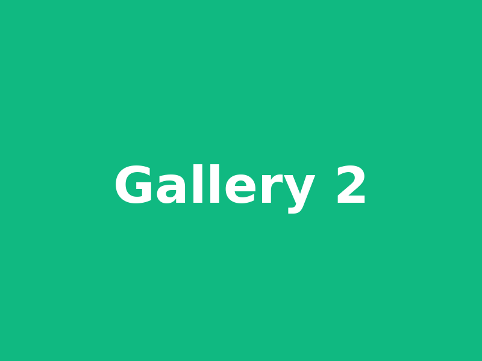
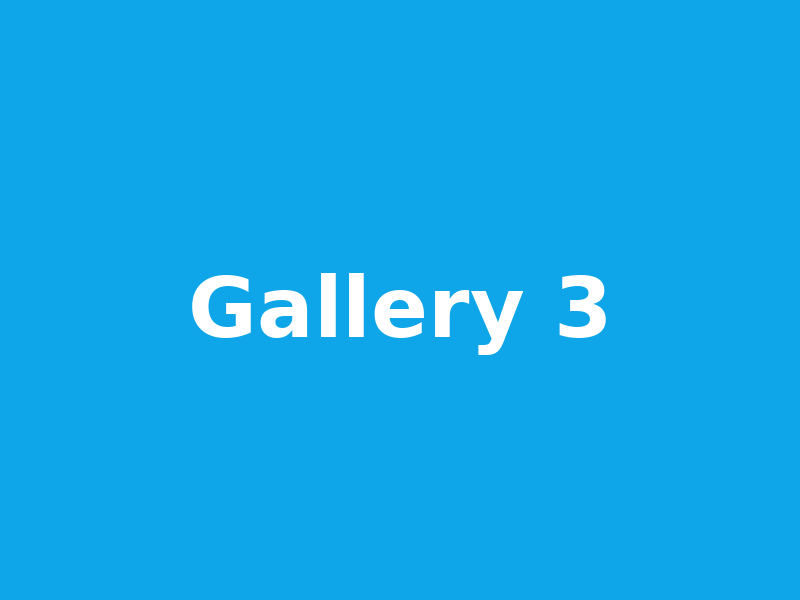
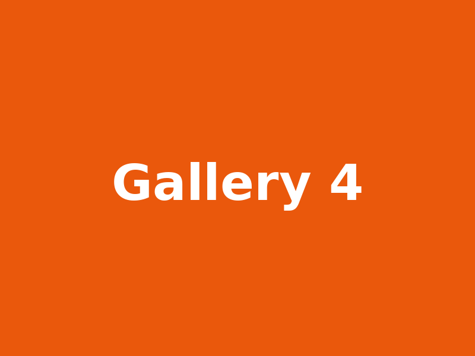
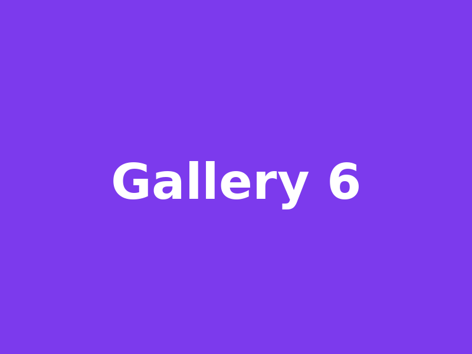
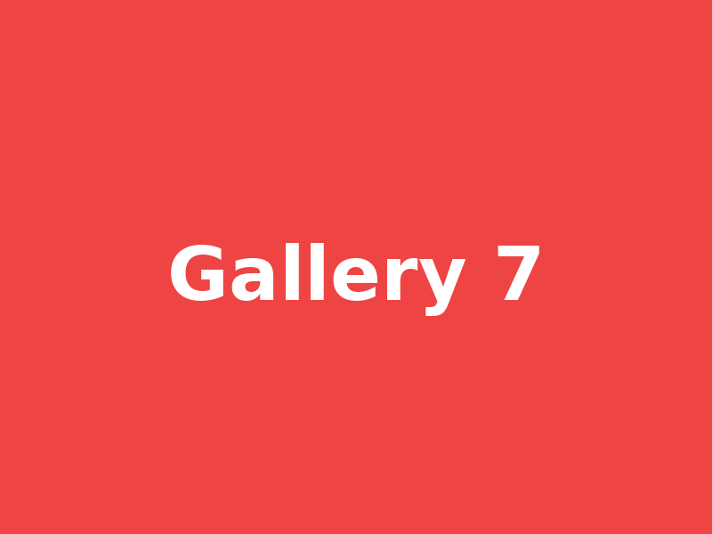
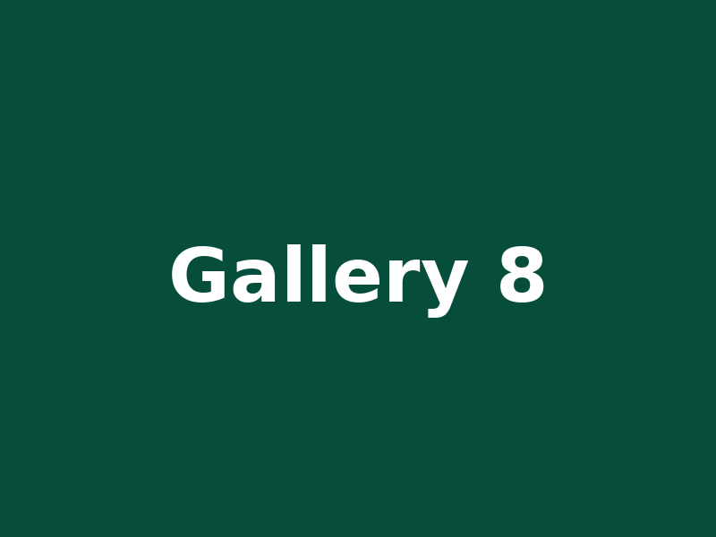

Sokol Dolní Počernice — stolní tenis
Oddíl zaměřený na závodní hraní dospělých. Pravidelné tréninky, hrajeme oficiální soutěž a pořádáme oddílové turnaje.
O nás
Oddíl stolního tenisu Sokol Dolní Počernice vznikl, aby umožnil závodní hrát dospělým hráčům v Dolních Počernicích a okolí. Jsme otevřeni novým členům.

Tréninky
Přijď si zahrát — pravidelné časy tréninků:
- Úterý — 19:00–21:00
Tělocvična Sokol · Všichni - Středa — 18:00–20:00
Tělocvična Sokol · Pokročilí - Pátek — 18:00–20:00
Tělocvična Sokol · Mládež - Neděle — 18:00–20:00
Tělocvična Sokol · Mládež
Přijď si s námi zahrát - máme pravidlo, přijď si s námi vyzkoušet 3 tréninky a pak si řekneme vzájemně. Když se domluvíme, tak zaplatíš příspěvky a splníš pár formalit pro vstup do Sokola Dolní Počernice a můžeš s námi hrát pravidelně.
Výsledky a tabulka
Oficiální tabulka soutěže a výsledky našeho týmu najdeš na STIS (zdroj):
Tabulka soutěže
Otevři oficiální tabulku na STIS:
Tabulka soutěže — STISVýsledky družstva
Seznam zápasů a výsledků (oficiální):
Výsledky družstva — STISPoznámka: STIS používá dynamické JS. Pokud chceš, mohu připravit server-side řešení, které data stáhne a zobrazí přímo na tomto webu.
Galerie






Kontakt
Sokol Dolní Počernice — Stolní tenis
Navarra Tomáš
Email: danecekj@centrum.cz
Telefon: +420 724 464 436